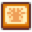

User:Zendowolf/Sandbox/Bundles
Jump to navigation
Jump to search
Bundles and items marked with  are used when you select Normal Bundles at the beginning of the game. And there should be a great explanation that makes sense for new players.
are used when you select Normal Bundles at the beginning of the game. And there should be a great explanation that makes sense for new players.
Here are some examples:
|  | |||||
|---|---|---|---|---|---|
 |
Spring Foraging | ||||
| Spring Foraging, buy from Pierre at Flower Dance | |||||
| Spring Foraging | |||||
| Spring Foraging, buy from Pierre at Flower Dance | |||||
| Spring Foraging | |||||
 |
Fish Pond product from many Fish | ||||
| Preserves Jar product from Roe | |||||
| Squid Kid drop; Fish Pond product from Squid and Midnight Squid | |||||
 |
|
Gold quality Spring Crops | ||||||||||||||
|
Gold quality Summer Crops | |||||||||||||||
|
Gold quality Fall Crops | |||||||||||||||
|
Gold quality Summer / Fall Crops | |||||||||||||||
 |
| ||
Here it is with a different image:
|
Spring Foraging | ||||
| Spring Foraging, buy from Pierre at Flower Dance | |||||
| Spring Foraging | |||||
| Spring Foraging, buy from Pierre at Flower Dance | |||||
| Spring Foraging | |||||